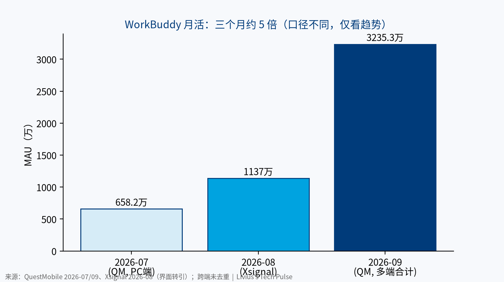
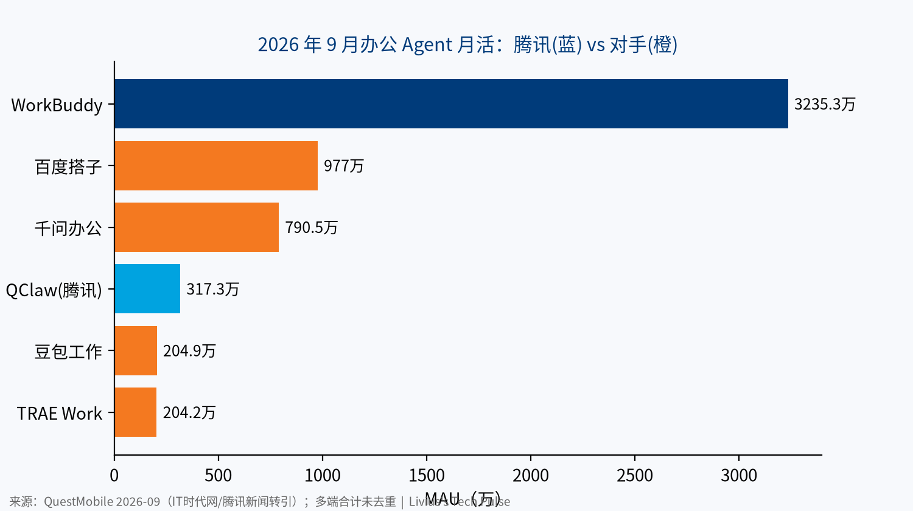

腾讯在 AI 上打出了两张牌。一张是 WorkBuddy，一个独立的桌面办公 Agent，七个月做到办公 Agent 月活第一。另一张是小微，一个长在微信里的原生 Agent，还在灰度，没有用户数，但背后是 14 亿月活的微信。前者抢新入口，后者守老入口。
一、背景：腾讯系 App 用户盘
| 产品 | 市场 | 日活 | 月活 | 数据日期 | 来源 | 置信度 |
|---|---|---|---|---|---|---|
| 微信及 WeChat（合并） | 国内+海外 | 无公开数据 | 14.39 亿 | 2026-06-30 | 腾讯 2Q26 财报 | 高 |
| WeChat（仅海外） | 海外 | 无公开数据 | 无公开数据 | — | 财报不拆分 | — |
| QQ（移动端） | 国内 | 无公开数据 | 5.20 亿 | 2026-06-30 | 腾讯 2Q26 财报 | 高 |
| 元宝（App） | 国内 | 2300 万以上 | 3733 万 | 2026-09 | 月活：QuestMobile（快科技转引）；日活：量子位智库（转引） | 中（二手） |
| WorkBuddy（多端合计） | 国内 | 无公开数据 | 3235.3 万 | 2026-09 | QuestMobile 三季度报告 | 中 |
| 小微 | 国内（微信内） | 无公开数据 | 无公开数据 | 灰度中 | — | — |
微信月活同比增长 2%，QQ 同比下降 2%（财报）。元宝在 AI 原生 App 中排第四，与豆包 4.19 亿、千问 1.58 亿不在一个量级（QuestMobile 2026-09，二手，置信度：中）。腾讯没有像字节、阿里那样的大体量海外 App 矩阵。WeChat 的海外月活不单独披露，所以这一节没有海外对比。
二、WorkBuddy：腾讯在 AI 上第一个跑出来的独立产品
是什么。 WorkBuddy 是腾讯云的 AI 原生桌面智能体工作台，覆盖办公、代码和创意场景。2026 年 3 月 13 日正式上线，基于开源 Agent 框架 OpenClaw 做了产品化（腾讯云开发者社区，2026-03-13，置信度：中）。国内版可以切换混元、DeepSeek、GLM、Kimi、MiniMax 等模型。
时间线。
| 日期 | 事件 | 来源 |
|---|---|---|
| 2026-03-13 | 正式上线，下载送 5000 Credits | 腾讯云社区 |
| 2026-05-15 | 企业版调价：旗舰版 78→198 元/人/月 | 腾讯云公告 |
| 2026-07-01 | 个人版改为标准/高级/旗舰三档 | WorkBuddy 定价页 |
| 2026-07-20 | QClaw 相关团队并入 WorkBuddy | China AI Wire（二手） |
| 2026-08-12 | 财报称 WorkBuddy 用户快速增长、留存健康 | 腾讯 2Q26 业绩公告 |
| 2026-10-14 | 与企业微信联合发布，员工可在通讯录或侧边栏调用 | 腾讯新闻（二手） |
用户数据。
| 指标 | 数值 | 数据日期 | 来源 | 置信度 |
|---|---|---|---|---|
| PC 客户端月活 | 658.2 万 | 2026-07 | QuestMobile（钛媒体） | 中（二手） |
| 月活 | 1137 万 | 2026-08 | Xsignal（China AI Wire 转引） | 中（二手） |
| 多端合计月活 | 3235.3 万 | 2026-09 | QuestMobile | 中 |
| 桌面端月访问量 | 8534 万次 | 2026-09 | 易观（腾讯新闻转引） | 中（二手） |
| 月人均使用时长 | 20.2 分钟 | 2026-08 | Xsignal（转引） | 中（二手） |
| 日活 | 无公开数据 | — | — | — |
| 付费用户数 / 收入 | 无公开数据 | — | — | — |

注意口径：7 月是 PC 端，8 月是另一家机构，9 月是 APP、网页和 PC 多端合计且未去重。所以“三个月约 5 倍”只能看方向，不能算精确增速。
竞争格局。 9 月办公 Agent 月活：WorkBuddy 3235.3 万，百度搭子 977 万，千问办公 790.5 万，腾讯 QClaw 317.3 万，豆包工作 204.9 万，TRAE Work 204.2 万（QuestMobile，二手，置信度：中）。WorkBuddy 约为第二名的 3.3 倍。但粘性还不算高：8 月月人均 20.2 分钟，低于扣子的 29.1 分钟（Xsignal，二手）。

商业模式。 免费体验版拉新，积分订阅变现。个人版：标准 99 元/月、高级 199 元/月、旗舰 999 元/月，加量包 1000 积分 50 元。企业版：SaaS 企业版 198 元/人/月、专有云企业版 316 元/人/月，另有私有化版（定价页、腾讯云计费，置信度：高）。WorkBuddy 和 CodeBuddy 积分共享。有报道称腾讯没有给 WorkBuddy 单独设商业化 KPI，回报主要走腾讯云（二手，置信度：低）。
我的判断。 WorkBuddy 的优势不是模型，而是分发和接入：企业微信 PC 端 9 月月活 2030.2 万，高于钉钉 1256.8 万和飞书 193.5 万（QuestMobile，二手）。同时它也开放了钉钉、飞书机器人接入，不把自己锁在腾讯生态里。风险在于规模领先尚未转化为深度使用，且推理成本高。财报披露，剔除新 AI 产品后经营盈利同比增长 19%，含新 AI 产品则为 9%，说明这类产品目前仍在消耗利润。
三、微信小微：把 AI 做成微信的一层
是什么。 小微是微信团队开发的原生 AI 助手，入口在主界面左上角，2026 年 6 月开始小范围灰度（极客公园，2026-06-23）。9 月电脑版也开始灰度（新黄河，2026-09-15）。
能力。 根据官方使用条款和媒体实测：
- 对话、搜索公众号和视频号、总结群聊和文件、生成图片；
- 代发消息、发起语音视频通话、查看朋友圈、修改设置、调起小程序；
- 一句话生成“小工具”，目前只能自己用，不能分享；
- “小微 AI 社交”：你的小微可以先和好友的小微沟通，再交给本人决定（新黄河实测，9 月）。
边界。 转账、红包、支付需要用户确认；删除聊天记录、输入验证码或密码等不支持代办。微信员工回应称，只有在用户主动唤起时才临时读取聊天上下文（新浪财经，2026-09-15，二手）。
模型。 小微由微信自研的 WeLM 驱动，而不是集团的混元模型。WeLM-80B 总参数 800 亿、激活约 30 亿；更大的 WeLM-617B 正在研发；复杂问题由 DeepSeek 等外部模型兜底（新黄河、科技兽，二手，置信度：中）。
数据。 用户数、日活、调用量均无公开数据。可参考的侧面数据：微信 AI 应用类小程序半年增长近 40%，6.3 万个小程序参与大模型 Token 扶持计划（新浪财经，2026-08-12，二手，置信度：中）。
战略意义。 腾讯在 2Q26 电话会上把小微定位为能感知上下文的 Agent，可以调用微信的社交关系、商户触达和支付能力，长期目标是用户、小程序和商家各有 Agent，相互交易（新黄河转述）。我的判断有三点：
- 小微不和豆包抢独立 App 入口，而是把 14 亿人已经在用的微信变成 Agent 平台。
- 它的护城河是个人上下文和小程序服务供给，难点也在这里：服务没接入，Agent 就办不成事。
- 腾讯刻意放慢了节奏，多步确认优先于全自动。这对 AI 社交、AI 代付这类功能来说是必要的。
四、两张牌怎么配合
| 维度 | WorkBuddy | 小微 |
|---|---|---|
| 场景 | 工作 | 生活 |
| 形态 | 独立桌面 Agent | 微信内嵌 Agent |
| 主力模型 | 多模型可选 | WeLM 自研为主 |
| 变现 | 积分订阅 + 企业席位 | 无公开收费 |
| 用户规模 | 3235.3 万月活（9 月） | 无公开数据 |
| 阶段 | 规模化 + 涨价 | 灰度 |
结论
- WorkBuddy 已经验证了规模，下一关是粘性和单位经济。
- 小微还没有数据，但它决定的是微信下一个十年的形态。
- 腾讯的 AI 打法是：工作场景用独立产品抢速度，生活场景借微信求稳。
口径说明：数据截至 2026-10-28。QuestMobile、Xsignal、易观口径不同，多端月活未去重，跨产品只比较量级。标注“二手”的数字转引自媒体报道。WorkBuddy 日活、付费数和收入，小微用户数，WeChat 海外月活，均无公开数据，本文不做估算。本文不构成任何投资建议。